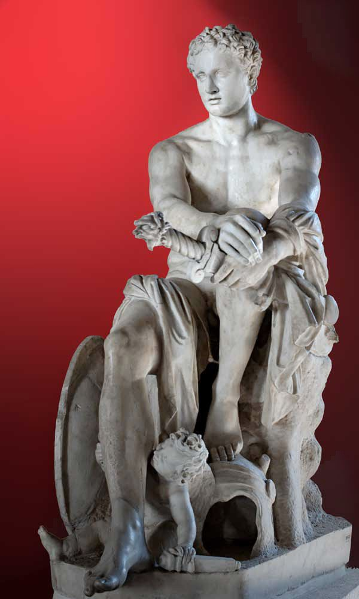

God of War, Battle-Frenzy and Bloodshed

The Ludovisi Ares, Roman marble after a Greek original, with Eros at his feet — Palazzo Altemps, Rome
Ares is war with the strategy stripped out: the charge, not the plan behind it; the noise and the blood-heat, not the treaty that follows. Son of Zeus and Hera, he stands opposite Athena on almost every point that matters. She is war as intelligence: the besieged city, the ambush, the moment discipline decides a battle before the first spear is thrown. He is war as appetite: the frenzy that possesses a line of men and turns them briefly into a single animal, indiscriminate, unlovely, occasionally necessary. The Greeks did not pretend to like him for it. Homer's Iliad gives Ares less honour than almost any other god of rank: Zeus himself, mid-poem, tells his own son to his face that he is "the most hateful to me of all the gods who hold Olympus" (5.890), and means it. Ares is the least loved Olympian because he personifies the part of war no city wants to admit it needs: the raw, ugly, battlefield-tested willingness to kill and to keep killing, which every army requires and every peacetime conscience recoils from once the fighting stops.
The MythsBook 5 of the Iliad gives Ares his single worst afternoon. Fighting openly for the Trojans, he has already speared the Greek hero Diomedes in an earlier bout of the battle when Athena, who backs the Greeks and despises Ares' indiscriminate slaughter on principle, climbs into Diomedes' chariot herself, takes the reins, and drives him straight at the war god. She guides the mortal's spear into Ares' belly. What follows is deliberately undignified: Ares "bellowed as loud as nine or ten thousand men bellow in battle" (5.860), a monstrous, animal noise that terrifies both armies, then flees upward to Olympus streaming blood, to whine to his father about the injury. Zeus's reply is not sympathy but scorn: Ares is, he says, the god he hates most of all, forever loving strife and battle for their own sake, and if he weren't his own son he would long since have been thrown down lower than the Titans (5.890–898). The healer Paeon salves the wound; Ares sulks, healed but humiliated, while Zeus's contempt is left standing as the poem's real verdict on him.
In Odyssey 8, the bard Demodocus sings the gods' favourite joke at Ares' expense. Ares and Aphrodite, wife of the smith-god Hephaestus, have been meeting in secret; the sun, Helios, sees everything and reports it. Hephaestus, rather than confronting them by force, forges a net of bronze links finer than spider silk and invisible to the eye, rigs it above his own marriage bed, and announces a trip. Ares wastes no time; the lovers climb into bed together and the net drops, binding them fast in an position from which neither can move. Hephaestus summons the male gods to witness the spectacle rather than punish it quietly, and they come and laugh, unable to help themselves, at the sight of the fastest, boldest god on Olympus caught helpless in a craftsman's trap. Only after payment of compensation and much divine amusement are the two released. The story is pointed rather than incidental: brute force, it says, is no match for a wronged intelligence with time to plan, which is more or less Athena's argument against him made into comedy.
Apollodorus (3.14.2) and Pausanias (1.28.5) preserve the story that gave Athens its most famous hill its name. Ares' daughter Alcippe was assaulted by Halirrhothius, a son of Poseidon. Ares killed him for it, on the spot and without trial of his own. Poseidon, in response, demanded that Ares himself stand judgement before the assembled gods, and the hearing was held on a rocky hill beside the Athenian acropolis. Ares was acquitted, the killing judged a justified defence of his child rather than a crime, and the hill afterwards took the name Areopagus, "hill of Ares", and became the seat of Athens' own homicide court, the body that for centuries after tried the city's most serious killings. Ares' one appearance as a defendant rather than a combatant left a permanent institution behind it: even the god who could not be trusted with a battlefield produced, once, the model for a court.
Apollodorus (3.4) tells how the hero Cadmus, seeking water to found his city, sent his companions to a spring guarded by a monstrous serpent, sacred to Ares, which killed them all. Cadmus killed the dragon in turn and, on Athena's instruction, sowed its teeth in the earth; armed men, the Spartoi, sprang up and fought each other until five survived to become the ancestors of the Theban nobility. But the dragon was Ares' own, and the killing carried a debt: Cadmus served the war god as a bondsman for eight years in penance before he was permitted to found Thebes in earnest. His reward, once the term was served, was Ares' own daughter Harmonia in marriage, a match that fused the bloodline of the city's founder with the god whose creature he had slain. Thebes, alone among the great Greek cities, could trace its royal house back to Ares on both sides of a single, blood-priced bargain.
Ares fathers violent sons the way other gods father heroes, and the myths return again and again to his inability to keep them alive. The Hesiodic Shield of Heracles tells of Cycnus, Ares' son, who waylaid travellers on the road to Delphi to build a temple of skulls and bones from his victims, until Heracles came against him. Ares armed his son personally and stood in the chariot beside him, and still Cycnus fell to the hero's spear; when Ares himself then attacked Heracles in fury, Athena turned even that blow aside, and Ares was driven from the field a second time, wounded again by a mortal's hand. Other sons meet no kinder ends: Oenomaus dies by his own treacherous chariot wheel, and Diomedes of Thrace is fed to his own man-eating mares by Heracles as one of the Twelve Labours. The war god who cannot be defeated by argument or shame is, repeatedly, powerless at the one moment that would matter to him: the death of his own children. It is the closest myth comes to giving Ares an interior life at all, and it is composed entirely of grief he is never shown processing.
Epithets and DomainsAres presents an honest problem for any account of cult: the Greeks fought constantly and built him almost nothing for it. Where other Olympians accumulated regional titles by the dozen, real, sustained cult to Ares was thin and geographically lopsided, concentrated in Thrace (a region the Greeks themselves considered his true homeland and, not coincidentally, half-barbarian) and a handful of Peloponnesian sites. What follows are the attested epithets worth keeping; several plausible-sounding titles found in modern popular sources could not be confirmed against ancient sources and have been left out rather than guessed at.
His most formulaic Homeric title, and one invoked directly by name in the Athenian ephebic oath sworn by young men entering military service. In some traditions Enyalios is treated as a separate, older war-deity later fused with Ares rather than simply an epithet of his; the sources do not agree, and both readings are defensible.
A cult title at Tegea in Arcadia, recorded by Pausanias (8.48.4), commemorating the occasion when the women of the town armed themselves and fought off a Spartan attack unaided; the men, arriving too late to help, were excluded from the victory feast held for the god, and women alone served and ate at his table that day.
Attested near Sparta by Pausanias (3.19.7), an epithet as unflattering as it sounds: the Spartans, of all Greek states the most martial and the most likely to actually worship him, still named him for the animal ferocity of war rather than its glory.
A local cult title at Tegea (Pausanias 8.44.7), linked there to a story of the god lying with a local woman; an unusual, gentler face of a god otherwise defined by violence, and a reminder that even Ares' thin cult record was not uniform.
Ares is the archetype of embodied aggression, and his Greek reception is itself the psychological data. Jean Shinoda Bolen, in Gods in Everyman, reads him as the man of body and immediacy: reactive where Athena is deliberate, present where Apollo is distant, feeling first and always through the muscles. In Jungian terms he is the closest Olympian to the shadow proper: the part of the psyche a civilisation refuses to honour and therefore meets only in eruption. The contrast with Rome makes the point sharply. Mars was a father of the Roman state, dignified and central; Ares got scorn from his own father and almost no temples. A culture that despises its aggression does not lose it, it loses the training of it, and the Iliad's bellowing, wounded, sulking Ares is a portrait of exactly that: force that was never taught form.
The light expression deserves more honour than the Greeks gave it. Ares is courage as a body-fact rather than a decision: the person who moves towards the scream while others are still processing. His single court appearance is telling, and it is the archetype's best face: he killed to defend a daughter mid-assault, stood trial for it, and was acquitted; the protective violence that answers real harm now, not after committee. He is also vitality itself, the heat that Athena's plans need if they are ever to leave the map table, and the myths quietly grant him something rarer still: he is the only Olympian repeatedly shown grieving, a father who arms his sons, stands beside them, and loses them anyway. There is more interior life in Ares' unprocessed grief than in most of the pantheon's triumphs.
The shadow is the berserker and the baited bull. Reactive force cannot grade its responses (the whole self commits instantly, which is its gift and its catastrophe), and it is trivially easy to provoke: Athena defeats Ares every time not because she is stronger but because he can be made to charge. Humiliation clings to the pattern (the net, the bellowing retreat from Diomedes' spear) precisely because a reactive man's dignity is hostage to anyone patient enough to stage the trap. And when the protective instinct loses its object it curdles into appetite: violence enjoyed rather than spent, the frenzy that no longer asks whose blood. The archetype's work is not suppression, which merely re-exiles it, but training: the Greeks themselves knew the answer and danced it, in the pyrrhiche, the armed war dance that gave the killing energy rhythm, form and an audience it did not have to bleed for.
In Modern LifeAres is the least employable Olympian on paper and everywhere in practice: the firefighter and the paratrooper, the A&E charge nurse at 3am, the boxer, the bouncer, the litigator who comes alive only in the fight, the founder whose response to threat is attack before analysis. He is also, more quietly, every person whose first language is physical: who thinks by moving, trusts what their gut does before their mind arrives, and experiences the modern knowledge economy as a cage built by Athenas for Athenas.
In coaching, the Ares pattern presents in two opposite ways. The first is the untrained version: the executive whose anger is honest, informative and far too expensive, who commits totally and instantly to positions a day's thought would have modified, and who is being systematically baited by a calmer rival (watch for the Athena-and-Ares set-piece in boardrooms: the strategist who needles the reactive colleague into the outburst that discredits him; it is as scripted as the Iliad). The intervention is never "calm down", which the pattern hears as exile. It is form: physical practice that gives the energy somewhere to live daily, protocols that buy four seconds between trigger and charge, and the reframing of anger as signal, the body's intelligence about violation arriving before the mind's.
The second presentation is the over-corrected version, increasingly common: the man or woman whose aggression was shamed out of visibility early (the Greek solution, reproduced in families) and who now cannot fight at all: cannot negotiate hard, cannot defend a boundary, cannot protect their own Alcippe when it matters. For these clients Ares is not the problem but the missing capacity, and the work is rehabilitation: teaching the nervous system that the fire can be visited without burning the house down. Either way the test of health is the same, and it is Ares' own acquittal standard: force in defence of something, delivered at the scale of the violation, and done when it is done.
CorrespondencesMars. The Greeks knew the planet as the star of Ares; the identification is ancient and secure.
Tuesday (Latin dies Martis). From the Hellenistic planetary week, late antiquity: astrological convention rather than classical cult practice.
Red, iron grey, bronze. Modern convention, though red follows the planet and the blood naturally enough.
The spear, the crested helmet, the shield, the war chariot driven by Phobos and Deimos, the burning torch of the war-cry.
The dog: the Spartans sacrificed puppies to Enyalios, one of the very few dog-sacrifices in Greek religion (Pausanias 3.14.9). The serpent, from his Theban dragon. The vulture, the battlefield's bird, associated with him in literature rather than cult.
None securely attested in Greek cult; plant lists for Ares in modern books are convention, often borrowed from the Roman Mars, who had real ones.
Sparse and stern, like his cult: the Spartan puppy sacrifice at night to Enyalios; soldiers' pre-battle sacrifices to Artemis Agrotera and to Enyalios together per Athenian custom. Modern practice offers iron, red wine and effortful physical acts; contemporary convention, but in his grammar: he is plausibly a god you offer training to.
No major panhellenic festival, unique among the twelve: the clearest single fact about how the Greeks held him. The Tegean women's feast of Gynaicothoinas is the memorable local exception.
Thrace, which the Greeks called his homeland; Tegea; Theritas near Sparta; the Areopagus at Athens, his hill of judgement; and the temple of Ares in the Athenian Agora, moved there stone by stone in the Roman period.
None attested.
For practice, the attested detail worth keeping is the pyrrhiche, the armed dance: performed in armour, taught to Spartan children, danced at Athenian festivals, and understood by the Greeks themselves as war-energy given rhythm and made beautiful. It is the one ancient technology for honouring Ares without bloodshed, and its modern descendants (the kata, the heavy-bag round, the drill done until it sings) are the most honest offerings this god ever receives. He is not a god of the altar; he is a god of the training floor.
Zeus and Hera: the one child the two of them both acknowledge without argument, and the one neither much likes
Aphrodite, his great and openly sung affair, the union that produced Phobos and Deimos (Panic and Dread, who yoke and drive his war chariot) and the daughter Harmonia
Harmonia, who married Cadmus of Thebes. The Amazons, by the queen Otrera. Violent sons including Cycnus, Oenomaus, and Diomedes of Thrace, keeper of the man-eating mares
Athena, who out-thinks and defeats him every time their paths cross in battle. Heracles, who kills his sons and wounds him besides. Hephaestus, the wronged husband whose net humiliated him more thoroughly than any spear
Ares was born of the generation that settled onto Olympus once the Titanomachy ended, into an order already at peace with itself, which may be part of the problem: a god built entirely for war, arriving after the one war that mattered had already been won.